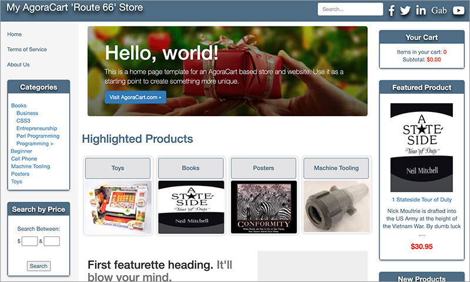
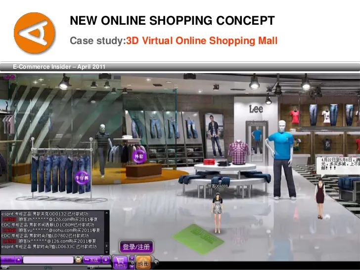

Web 2.0 Technology
Clicking two-dimensional images on a flat web page does not replicate the real-life shopping experience. In the case of fashion items, one can only guess how the real item looks and feels, and has to purchase it to find out. This results in a high percentage of returns and a large amount of waste. But, slowly, digital shopping is changing. The days of clicking on a two-dimensional image and adding it to an icon of an old-fashioned shopping basket are coming to an end, to be replaced by a virtual shopping experience that is far more immersive and thrilling.


Future of Retail
Physical premises will remain, more or less as showcases for particular brands, the majority of our retail therapy will take place in the comfort of our own homes, but with an experience that is so seamless and immersive that we will barely notice the distinction between the Metaverse and the Universe. The shoppers of the future will wander through virtual malls with their friends, trying on clothes and getting a far better 360-degree view of how they will look, rather than the limited facilities of a crowded changing room. Clothes, shoes, make-up, sunglasses and accessories will all be tried and worn by our avatar so we can see how it feels to inhabit a particular look.
The Metaverse of the future is not binary. Our physical selves and our digital selves will merge into one representation of our taste, our aesthetics, and our creativity. With the advent of decentralized identity for avatars (our Digital Soul, as Crucible describe it) so we can prove who we say we are, combined with the powerful idea of decentralized commerce (dCommerce) that allows in-game or in-world transactions to happen peer-to-peer, we are rapidly entering a world where our digital self is simply an extension of the body we inhabit in the physical realm.